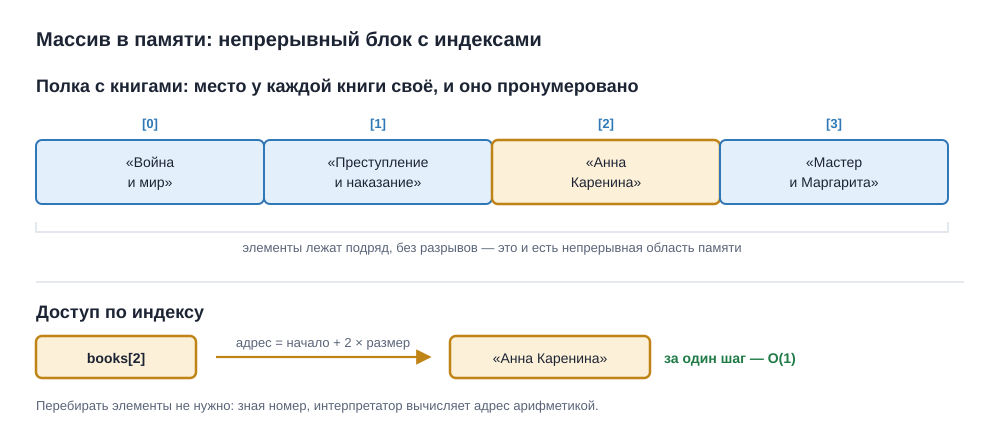
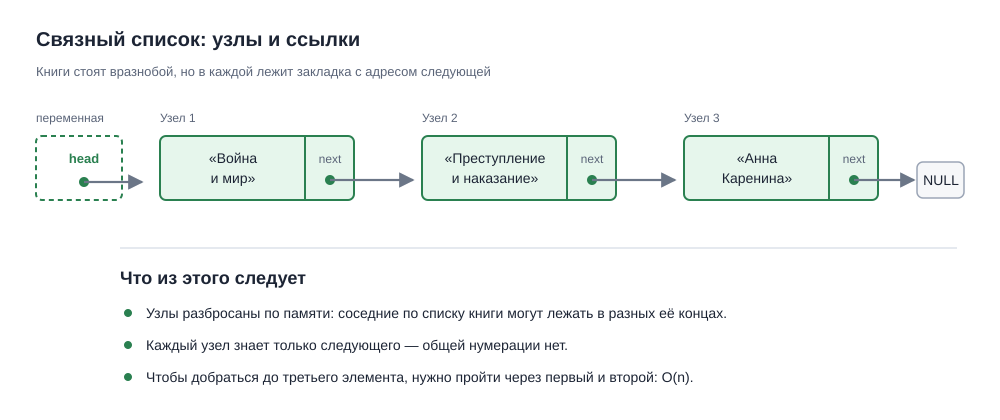
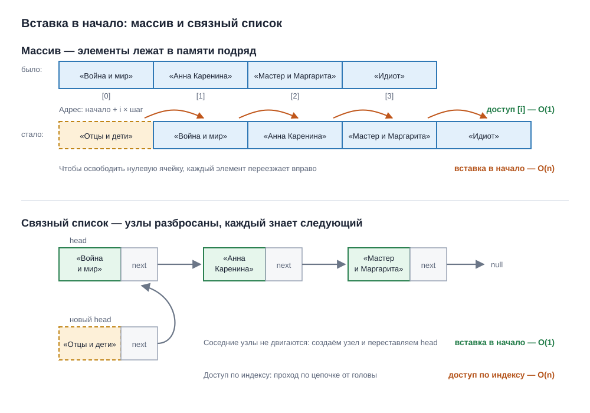
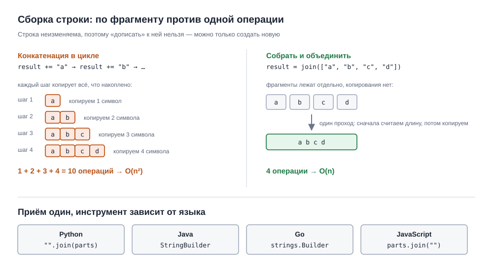

Введение
Вы, скорее всего, уже знакомы с массивами, списками и строками и используете их каждый день. Возможно, это даже не первый материал, где вы встречаете эти структуры данных. Мы это понимаем и не будем учить вас базовому синтаксису.
Вместо этого мы посмотрим на знакомые структуры под другим углом — с точки зрения алгоритмических интервью.
Что мы будем делать
На интервью вас часто спрашивают не «как написать код», а:
- «Какая сложность этой операции?»
- «Почему вы выбрали массив, а не хэш-таблицу?»
- «Как это будет работать в памяти?»
- «В чём недостатки вашего подхода?»
Чтобы отвечать на эти вопросы, нужно понимать:
- Как структуры работают внутри — устройство памяти, указатели
- Сложность операций — почему поиск в массиве O(n), а по индексу O(1)
- Практическое применение — реальные сценарии, когда какую структуру выбрать
- Трейд-офф (компромисс) — обмен временем на память, когда это оправдано
Почему это важно для интервью
На собеседовании от вас ожидают, что вы:
- Понимаете разницу между массивом и связным списком на уровне памяти
- Знаете сложность операций «из коробки», не задумываясь
- Можете объяснить, почему в одной задаче лучше HashMap, а в другой — массив
- Понимаете последствия своего выбора для производительности
Структуры, которые мы рассмотрим
В этом материале мы разберём три базовые структуры, которые вы, скорее всего, уже знаете, и посмотрим на них глубже:
- Массивы — как устроены в памяти, почему доступ O(1)
- Строки — Unicode, mutable vs immutable, особенности разных языков
- Связные списки — устройство, указатели, когда они лучше массивов
Мы не будем учить вас их использовать. Вы уже это умеете. Мы научим вас обосновывать свой выбор и понимать последствия — именно это нужно на алгоритмических интервью.
Пример задачи: управление библиотекой
В качестве примера до конца материала будем рассматривать систему управления библиотекой. Нам нужно хранить информацию о книгах, выполнять поиск, добавление и удаление. Разные структуры данных подойдут для разных задач.
Массивы
Что такое массив
Массив — это непрерывная область памяти, где хранятся элементы одного типа. Каждому элементу присваивается индекс, начиная с 0.
Пример из библиотеки: Полка с книгами, где на каждом месте стоит одна книга. Можем сразу обратиться к книге по её номеру на полке.

Python
# Python
# Создание массива (list)
books = ["Война и мир", "Преступление и наказание", "Анна Каренина"]
# Доступ по индексу
first_book = books[0] # O(1)
# Добавление в конец
books.append("Мастер и Маргарита") # O(1)
# Вывод элемента по индексу
print(books[2]) # "Анна Каренина"
Роль массива играет list — динамический массив: внутри он хранит непрерывный блок ссылок на элементы (сами объекты лежат отдельно в куче), длину и ёмкость. Это обеспечивает O(1) доступ по индексу и автоматическое расширение. В дальнейшем говорим «массив», подразумевая list.
Java
// Java
import java.util.*;
// Создание массива
String[] books = new String[3];
books[0] = "Война и мир";
books[1] = "Преступление и наказание";
books[2] = "Анна Каренина";
// Или ArrayList (динамический массив)
List<String> bookList = new ArrayList<>();
bookList.add("Война и мир");
bookList.add("Преступление и наказание");
// Доступ по индексу
String firstBook = bookList.get(0); // O(1)
В Java два типа: T[] — массив фиксированного размера с полем length, и ArrayList<T> — динамический массив-обёртка (внутри хранит массив elementData и поле size). Для алгоритмических задач чаще используйте ArrayList: динамический размер, удобные методы. Обычный массив применяйте, когда размер фиксирован и известен заранее.
Go
// Go
// Создание среза (slice)
books := []string{"Война и мир", "Преступление и наказание", "Анна Каренина"}
// Доступ по индексу
firstBook := books[0] // O(1)
// Добавление в конец
books = append(books, "Мастер и Маргарита") // O(1)
// Вывод элемента по индексу
fmt.Println(books[2]) // "Анна Каренина"
В Go два типа: [N]T — классический массив фиксированного размера (размер является частью типа и известен при компиляции), и []T (slice) — динамический массив. Slice хранит указатель на первый элемент, длину (len) и ёмкость (cap). В дальнейшем говорим «массив», подразумевая slice.
JavaScript
// JavaScript
// Создание массива
const books = ["Война и мир", "Преступление и наказание", "Анна Каренина"];
// Доступ по индексу
const firstBook = books[0]; // O(1)
// Добавление в конец
books.push("Мастер и Маргарита"); // O(1)
// Вывод элемента по индексу
console.log(books[2]); // "Анна Каренина"
Роль массива играет Array — всегда динамический массив: ни фиксированного размера, ни единого типа элементов у него нет. Добавление и удаление в конце (push/pop) — O(1), вставка и удаление в начале (unshift/shift) — O(n): все остальные элементы сдвигаются.
C#
// C#
// Создание массива фиксированного размера
string[] books = { "Война и мир", "Преступление и наказание", "Анна Каренина" };
// Доступ по индексу
string firstBook = books[0]; // O(1)
// Или List<T> (динамический массив)
var bookList = new List<string> { "Война и мир", "Преступление и наказание" };
bookList.Add("Мастер и Маргарита"); // O(1) амортизированно (в среднем по серии вставок)
// Вывод элемента по индексу
Console.WriteLine(bookList[1]); // "Преступление и наказание"
В C# два типа: T[] — массив фиксированного размера со свойством Length, и List<T> — динамический массив-обёртка (внутри хранит массив и поле Count). Для алгоритмических задач чаще используйте List<T>: динамический размер, удобные методы. Обычный массив применяйте, когда размер фиксирован и известен заранее.
PHP
// PHP
// Создание массива
$books = ["Война и мир", "Преступление и наказание", "Анна Каренина"];
// Доступ по индексу
$firstBook = $books[0]; // O(1)
// Добавление в конец
$books[] = "Мастер и Маргарита"; // O(1) амортизированно (в среднем по серии вставок)
// Вывод элемента по индексу
echo $books[2] . PHP_EOL; // "Анна Каренина"
В PHP единственный тип массива — array: упорядоченная хеш-таблица, причём для списка с ключами 0, 1, 2, … внутри используется компактное представление «плоским» блоком. Размер динамический, типы элементов могут быть разными. Массив фиксированного размера даёт класс SplFixedArray. Присваивание и передача массива в функцию копируют его (лениво, copy-on-write), поэтому изменение «на месте» внутри функции требует параметра по ссылке: array &$arr.
Подробнее об устройстве этих типов, с ссылками на документацию, — в разделе «Специфика по языкам» в конце материала.
Сложность операций с массивом
| Операция | Сложность | Пояснение |
|---|---|---|
| Доступ по индексу | O(1) | Прямой доступ к памяти |
| Поиск значения | O(n) | Нужно перебрать все элементы |
| Вставка в конец | O(1) | Доступ по индексу и добавление |
| Вставка в начало | O(n) | Сдвигаем все элементы |
| Удаление из конца | O(1) | Просто уменьшаем размер |
| Удаление из середины | O(n) | Сдвигаем элементы |
Для массивов фиксированного размера (T[] в Java и C#, [N]T в Go, SplFixedArray в PHP) доступны только операции:
- Доступ по индексу — O(1)
- Замена элемента по индексу — O(1)
- Поиск значения — O(n)
Вставка, удаление и изменение размера невозможны: размер фиксирован при создании. В Python и JavaScript массивов фиксированного размера нет: list и Array всегда динамические. В PHP так же ведёт себя обычный array; фиксированный размер появляется только у SplFixedArray.
Преимущества массивов
- O(1) доступ по индексу — прямой доступ к любому элементу за константное время
- O(1) вставка в конец (для динамических массивов) — можно быстро добавлять элементы в конец
Недостатки массивов
- O(n) поиск по значению — нужно перебрать все элементы
- O(n) вставка/удаление в начале или середине — сдвигаем элементы
Связные списки
Что такое связный список
Связный список — это структура данных, где элементы хранятся в узлах. Каждый узел содержит:
- Данные (значение)
- Указатель (ссылку) на следующий узел
Пример из библиотеки: Книги стоят на полке в случайном порядке, но в каждой книге есть закладка с указанием, где лежит следующая книга.

В большинстве языков программирования связного списка нет среди встроенных типов, и на собеседовании его пишут руками: узел — это класс или структура с полем данных и ссылкой next. Готовые реализации кое-где есть (например, java.util.LinkedList в Java, LinkedList<T> в C# или SplDoublyLinkedList в PHP), но в алгоритмических задачах ими почти не пользуются: интервьюер ждёт работы с узлами напрямую. Вот как связный список выглядит на шести языках курса:
Python
# Python
class Node:
def __init__(self, data):
self.data = data
self.next = None
class LinkedList:
def __init__(self):
self.head = None
def append(self, data):
new_node = Node(data)
if not self.head:
self.head = new_node
return
current = self.head
while current.next:
current = current.next
current.next = new_node
def print_list(self):
current = self.head
while current:
print(current.data)
current = current.next
# Использование
library = LinkedList()
library.append("Война и мир")
library.append("Преступление и наказание")
library.print_list()
Java
// Java
class Node {
String data;
Node next;
Node(String data) {
this.data = data;
this.next = null;
}
}
class LinkedList {
Node head;
void append(String data) {
Node newNode = new Node(data);
if (head == null) {
head = newNode;
return;
}
Node current = head;
while (current.next != null) {
current = current.next;
}
current.next = newNode;
}
void printList() {
Node current = head;
while (current != null) {
System.out.println(current.data);
current = current.next;
}
}
}
// Использование
LinkedList library = new LinkedList();
library.append("Война и мир");
library.append("Преступление и наказание");
library.printList();
Go
// Go
type Node struct {
data string
next *Node
}
type LinkedList struct {
head *Node
}
func (ll *LinkedList) Append(data string) {
newNode := &Node{data: data, next: nil}
if ll.head == nil {
ll.head = newNode
return
}
current := ll.head
for current.next != nil {
current = current.next
}
current.next = newNode
}
func (ll *LinkedList) PrintList() {
current := ll.head
for current != nil {
fmt.Println(current.data)
current = current.next
}
}
// Использование
library := &LinkedList{}
library.Append("Война и мир")
library.Append("Преступление и наказание")
library.PrintList()
JavaScript
// JavaScript
class Node {
constructor(data) {
this.data = data;
this.next = null;
}
}
class LinkedList {
constructor() {
this.head = null;
}
append(data) {
const newNode = new Node(data);
if (!this.head) {
this.head = newNode;
return;
}
let current = this.head;
while (current.next) {
current = current.next;
}
current.next = newNode;
}
printList() {
let current = this.head;
while (current) {
console.log(current.data);
current = current.next;
}
}
}
// Использование
const library = new LinkedList();
library.append("Война и мир");
library.append("Преступление и наказание");
library.printList();
Встроенного связного списка в JavaScript нет: узел пишут классом, как выше, или простым объектом вида { data, next }.
C#
// C#
class Node
{
public string Data;
public Node Next;
public Node(string data)
{
Data = data;
Next = null;
}
}
class LinkedList
{
public Node Head;
public void Append(string data)
{
var newNode = new Node(data);
if (Head == null)
{
Head = newNode;
return;
}
Node current = Head;
while (current.Next != null)
{
current = current.Next;
}
current.Next = newNode;
}
public void PrintList()
{
Node current = Head;
while (current != null)
{
Console.WriteLine(current.Data);
current = current.Next;
}
}
}
// Использование
var library = new LinkedList();
library.Append("Война и мир");
library.Append("Преступление и наказание");
library.PrintList();
В стандартной библиотеке C# есть LinkedList<T> (двусвязный), но на собеседовании узлы пишут руками, как выше.
PHP
// PHP
class Node
{
public ?Node $next = null;
public function __construct(public string $data)
{
}
}
class LinkedList
{
public ?Node $head = null;
public function append(string $data): void
{
$newNode = new Node($data);
if ($this->head === null) {
$this->head = $newNode;
return;
}
$current = $this->head;
while ($current->next !== null) {
$current = $current->next;
}
$current->next = $newNode;
}
public function printList(): void
{
$current = $this->head;
while ($current !== null) {
echo $current->data . PHP_EOL;
$current = $current->next;
}
}
}
// Использование
$library = new LinkedList();
$library->append("Война и мир");
$library->append("Преступление и наказание");
$library->printList();
В стандартной библиотеке PHP (SPL) есть SplDoublyLinkedList (двусвязный), но на собеседовании узлы пишут руками, как выше. Объекты в PHP передаются по handle (как ссылки), поэтому присваивание $current = $current->next перемещает указатель, а не копирует узел.
Сложность операций в связном списке
| Операция | Сложность | Пояснение |
|---|---|---|
| Доступ по индексу | O(n) | Нужно пройти от начала |
| Доступ к голове | O(1) | Если есть указатель на голову |
| Вставка в голову | O(1) | Создаём узел и обновляем указатель на голову |
| Вставка в конец | O(n) | Проходим до конца |
| Удаление из головы | O(1) | Перемещаем head на следующий узел |
| Поиск значения | O(n) | Проходим все элементы |
Преимущества связного списка перед массивом
- O(1) вставка и удаление в начале — если есть указатель на голову, можно быстро добавлять/удалять элементы
Недостатки связного списка перед массивом
- O(n) доступ по индексу.
- O(n) вставка в конец (если нет ссылки на последний узел).
- Дополнительная память на указатели
nextв каждом узле. - Однонаправленность: в односвязных списках невозможен обход в обратном направлении, что ограничивает использование в некоторых алгоритмах.
Сравнение массивов и связных списков
Таблица сложностей
| Операция | Массив | Связный список |
|---|---|---|
| Доступ по индексу | O(1) | O(n) |
| Вставка в начало | O(n) | O(1) |
| Вставка в конец | O(1)* | O(n)** |
| Удаление из начала | O(n) | O(1) |
| Поиск элемента | O(n) | O(n) |
* Для динамического массива, O(1) амортизированно: отдельная вставка иногда дорогая (место кончилось, массив увеличивается и копирует элементы), но такое случается редко, и в среднем по серии вставок цена одной остаётся константной.
** O(1), если дополнительно хранить указатель на хвост (tail).

Когда что использовать
Массив:
- Частый доступ по индексу
- Не нужен поиск по значению
- Размер известен заранее (для фиксированных массивов)
Связный список:
- Частые вставки/удаления в начале
- Не нужен доступ по индексу
- Размер неизвестен заранее (также подойдет динамический массив)
Практические примеры
Пример 1: Выбор структуры для каталога библиотеки
Если нам нужно:
- Быстро находить книгу по номеру → Массив
- Часто добавлять книги в начало → Связный список
- И то, и другое → Комбинированная структура (например, хэш-таблица + связный список)
Пример 2: Выбор структуры для истории изменений
Если нам нужно:
- Хранить историю операций в хронологическом порядке
- Добавлять новые записи в конец
- Редко удалять из середины
→ Массив (динамический) — идеально подходит, так как добавления в конец O(1) и есть доступ по индексу для навигации по истории
Строки
Что такое строка
Строка — это последовательность символов.
Важное различие:
- Mutable (изменяемый тип данных): можно изменить отдельные символы
- Immutable (неизменяемый тип данных): при любой операции создаётся новая строка
В Python, Java, Go, JavaScript и C# строки неизменяемые: изменить символ внутри существующей строки нельзя. PHP — исключение: его строка представляет собой изменяемую последовательность байт, но для Unicode-текста это не помогает (разбор — во вкладке PHP ниже).
Python
# Python
# Строки неизменяемые (immutable)
title = "Мойна и мир"
# title[0] = "В" # Такая операция невозможна: строки нельзя изменять
# Для изменения создаём новую строку
new_title = "В" + title[1:] # "Война и мир"
Java
// Java
// Строки неизменяемые (immutable)
String title = "Мойна и мир";
// title.charAt(0) = 'М'; // Такая операция невозможна: строки нельзя изменять
// Для изменения используем StringBuilder
StringBuilder sb = new StringBuilder(title);
sb.setCharAt(0, 'В');
String newTitle = sb.toString(); // "Война и мир"
// Или создаём новую строку
String another = "В" + title.substring(1); // "Война и мир"
Go
// Go
// Строки неизменяемые (immutable)
title := "Мойна и мир"
// title[0] = 'В' // Такая операция невозможна: строки нельзя изменять
// Для изменения используем []rune (руны для Unicode)
runes := []rune(title)
runes[0] = 'В'
newTitle := string(runes) // "Война и мир"
JavaScript
// JavaScript
// Строки неизменяемые (immutable)
const title = "Мойна и мир";
// title[0] = "В"; // Строка не изменится: присваивание молча игнорируется
// // (а в strict mode будет ошибка TypeError)
// Для изменения создаём новую строку
const newTitle = "В" + title.slice(1); // "Война и мир"
C#
// C#
// Строки неизменяемые (immutable)
string title = "Мойна и мир";
// title[0] = 'В'; // Такая операция невозможна: строки нельзя изменять
// Для изменения используем StringBuilder
var sb = new StringBuilder(title);
sb[0] = 'В';
string newTitle = sb.ToString(); // "Война и мир"
// Или создаём новую строку
string another = "В" + title.Substring(1); // "Война и мир"
PHP
// PHP
// Строки в PHP — последовательности байт (UTF-8 для кириллицы)
$title = "Мойна и мир";
// $title[0] = "В"; // Не сработает как нужно: [0] — это один байт, а «М» занимает два
// Для изменения создаём новую строку
$newTitle = "В" . mb_substr($title, 1); // "Война и мир"
Формально строки PHP изменяемы по байтам ($s[0] = "x" допустимо), но это работает только для однобайтовых символов (ASCII). Кириллица занимает в UTF-8 по два байта: присваивание $title[0] = "В" запишет только первый байт и выдаст предупреждение (Warning), поэтому для текста с Unicode новую строку собирают из частей, а символы режут функциями mb_*.
Особенности работы со строками
1. Операции со строками
Python
# Python
title = "Война и мир"
# Длина строки
length = len(title) # 11 (длина в символах)
# Поиск подстроки
search = "мир" in title # True
# Конкатенация (создает новую строку)
full = title + " - Л.Н. Толстой"
# Повторение
dashed = "-" * 20 # "--------------------"
# Разбиение
words = title.split(" ") # ["Война", "и", "мир"]
# Объединение
result = " ".join(words) # "Война и мир"
Python 3 использует Unicode по умолчанию: len, индексация и поиск корректно работают с любыми символами, включая кириллицу. При сборке строки в цикле используйте join() вместо +: O(n) вместо O(n²).
Java
// Java
String title = "Война и мир";
// Длина строки
int length = title.length(); // 11 (длина в кодовых единицах UTF-16)
// Поиск подстроки
boolean search = title.contains("мир"); // true
// Конкатенация (создает новую строку)
String full = title + " - Л.Н. Толстой";
// Или StringBuilder для множественных операций
StringBuilder sb = new StringBuilder();
sb.append(title);
sb.append(" - Л.Н. Толстой");
String fullBuilder = sb.toString();
// Разбиение
String[] words = title.split(" "); // ["Война", "и", "мир"]
// Объединение
String result = String.join(" ", words);
Java хранит строки в UTF-16: length() и charAt() работают с кодовыми единицами, для символов вне BMP (например, части эмодзи) один символ занимает две единицы. При сборке строки в цикле используйте StringBuilder вместо +: O(n) вместо O(n²).
Go
// Go
title := "Война и мир"
// Длина строки
length := len(title) // 20 (количество байт, не символов!)
// Поиск подстроки
contains := strings.Contains(title, "мир") // true
// Конкатенация
full := title + " - Л.Н. Толстой"
// Для множественных операций эффективнее strings.Builder
var sb strings.Builder
sb.WriteString(title)
sb.WriteString(" - Л.Н. Толстой")
fullBuilder := sb.String()
// Разбиение
words := strings.Split(title, " ") // ["Война", "и", "мир"]
// Объединение
result := strings.Join(words, " ")
Go хранит строки как байты UTF-8: len(s) возвращает количество байт (для «Война и мир» это 20, а не 11), а s[i] даёт i-й байт — можно получить «половинку буквы». Количество символов даёт len([]rune(s)). При сборке строки в цикле используйте strings.Builder: O(n) вместо O(n²).
JavaScript
// JavaScript
const title = "Война и мир";
// Длина строки
const length = title.length; // 11 (длина в кодовых единицах UTF-16)
// Поиск подстроки
const search = title.includes("мир"); // true
// Конкатенация (создаёт новую строку)
const full = title + " - Л.Н. Толстой";
// Повторение
const dashed = "-".repeat(20); // "--------------------"
// Разбиение
const words = title.split(" "); // ["Война", "и", "мир"]
// Объединение
const result = words.join(" "); // "Война и мир"
JavaScript, как и Java, хранит строки в UTF-16: length считает кодовые единицы, и символ вне BMP (например, часть эмодзи) занимает две. При сборке строки в цикле собирайте фрагменты в массив и объединяйте join(): O(n) вместо O(n²).
C#
// C#
string title = "Война и мир";
// Длина строки
int length = title.Length; // 11 (длина в кодовых единицах UTF-16)
// Поиск подстроки
bool search = title.Contains("мир"); // true
// Конкатенация (создаёт новую строку)
string full = title + " - Л.Н. Толстой";
// Или StringBuilder для множественных операций
var sb = new StringBuilder();
sb.Append(title);
sb.Append(" - Л.Н. Толстой");
string fullBuilder = sb.ToString();
// Разбиение
string[] words = title.Split(' '); // ["Война", "и", "мир"]
// Объединение
string result = string.Join(" ", words);
C#, как и Java, хранит строки в UTF-16: Length и индексация title[i] работают с кодовыми единицами char, символы вне BMP (например, части эмодзи) занимают две. При сборке строки в цикле используйте StringBuilder вместо +: O(n) вместо O(n²).
PHP
// PHP
$title = "Война и мир";
// Длина строки
$length = mb_strlen($title); // 11 (длина в символах); strlen($title) даст 20 — это байты
// Поиск подстроки
$search = str_contains($title, "мир"); // true
// Конкатенация (создаёт новую строку)
$full = $title . " - Л.Н. Толстой";
// Повторение
$dashed = str_repeat("-", 20); // "--------------------"
// Разбиение
$words = explode(" ", $title); // ["Война", "и", "мир"]
// Объединение
$result = implode(" ", $words); // "Война и мир"
PHP хранит строки как байты UTF-8, как и Go: strlen() и $s[$i] работают с байтами, а для подсчёта символов и срезов по символам нужны функции mb_* (mb_strlen, mb_substr) из расширения mbstring. При сборке строки в цикле дописывайте оператором .= (амортизированно O(1) на добавление) или собирайте фрагменты в массив и объединяйте implode(). Запись $s = $s . $x в цикле, напротив, копирует накопленную строку каждый раз: O(n²).
В алгоритмических задачах всегда уточняйте, работаете ли вы с ASCII или Unicode: от этого зависит правильность решения. Как длина строки и доступ к символам ведут себя в каждом из шести языков, разобрано в разделе «Специфика по языкам» в конце материала.

Сложность операций со строками
| Операция | Сложность | Пояснение |
|---|---|---|
| Доступ по индексу | O(1) | Прямой доступ |
| Поиск подстроки | O(n*m) | n — длина строки, m — длина подстроки |
| Конкатенация | O(n+m) | n и m — длины двух склеиваемых строк; создаём новую строку из всех их символов |
| Разбиение | O(n) | Проходим по всей строке |
| Объединение | O(n) | Проходим по всем элементам |
Специфика по языкам
Python
Python: list и str
Массив: роль массива играет list — динамический массив (указатель на блок памяти, длина, ёмкость). Добавление в конец append() — O(1) амортизированно, вставка в начало insert(0, x) — O(n). Элементы могут быть разных типов, фиксированного размера нет.
Кортеж: tuple — неизменяемая последовательность, например (1, "два", 3.0). Это не массив фиксированной длины в смысле других языков: элементы могут быть разных типов, а неизменяемым делается не размер, а сам набор элементов (нельзя присвоить t[0] = 5 или добавить элемент). Индексация и срезы работают как у list, доступ по индексу — O(1). Кортеж из неизменяемых элементов можно использовать как ключ словаря, список — нельзя.
Строки: str хранит символы Unicode, len() считает именно символы. Индексация и срезы работают корректно с любыми алфавитами.
Сборка строки: "".join(fragments); конкатенация += в цикле даёт O(n²).
Связный список: встроенного нет, узел пишут классом с полями data и next (как в примере выше).
Числа: int имеет произвольную точность, переполнения не бывает. В задачах, где по условию нужен 32-битный int (например, парсинг числа из строки), границы проверяют вручную.
Документация: https://docs.python.org/3/library/stdtypes.html#typesseq-list, https://docs.python.org/3/library/string.html
Java
Java: массивы, ArrayList и String
Массив: два типа — T[] фиксированного размера (поле length) и динамический ArrayList<T> (метод size()). add() в конец — O(1) амортизированно, add(0, x) в начало — O(n). Для алгоритмических задач чаще берут ArrayList.
Кортежи: встроенного типа нет. Фиксированный набор значений разных типов обычно оформляют классом или record (Java 16+).
Строки: String хранится в UTF-16; length() и charAt() работают с кодовыми единицами. Для большинства символов это совпадает с количеством символов, но символы вне BMP занимают две единицы.
Сборка строки: StringBuilder с append(); конкатенация + в цикле даёт O(n²).
Связный список: в стандартной библиотеке есть java.util.LinkedList (двусвязный), но на собеседовании узлы пишут руками: class Node { int val; Node next; }.
Числа: int — 32 бита, long — 64; переполнение происходит молча, без ошибок. В задачах на границы диапазона это проверяется явно.
Документация: https://dev.java/learn/language-basics/arrays/, https://dev.java/learn/numbers-strings/strings/
Go
Go: slice и string
Массив: два типа — [N]T фиксированного размера (размер — часть типа) и динамический []T (slice: указатель, len, cap). append() — O(1) амортизированно и возвращает новый slice, поэтому результат нужно присваивать: s = append(s, x).
Кортежи: отдельного типа нет. Несколько значений из функции возвращают через множественный возврат return a, b, а набор полей объявляют структурой struct.
Строки: string — это байты UTF-8. len(s) возвращает количество байт, s[i] даёт i-й байт. Количество символов: len([]rune(s)); для посимвольной работы строку конвертируют в []rune.
Сборка строки: strings.Builder с WriteString(); конкатенация + в цикле даёт O(n²).
Связный список: в стандартной библиотеке есть container/list (двусвязный), но на собеседовании узлы пишут руками через struct с указателем next *Node.
Числа: размер int зависит от платформы — 32 бита на 32-битных системах и 64 на 64-битных (на большинстве современных машин — 64); есть и фиксированные int32/int64. Переполнение происходит молча.
Документация: https://go.dev/blog/slices-intro, https://pkg.go.dev/strings
JavaScript
JavaScript: Array и строки
Массив: Array — всегда динамический массив: ни фиксированного размера, ни единого типа элементов ([1, "два", null] — валидный массив, и даже new Array(5) остаётся динамическим). push/pop — O(1) амортизированно, shift/unshift — O(n): очередь через shift() в цикле даёт O(n²).
Кортежи: отдельного типа нет, на практике используют массив фиксированной длины, например [x, y]. В TypeScript такому массиву можно задать тип-кортеж [number, number], но во время выполнения это обычный Array.
Сортировка: sort() без аргументов сравнивает элементы как строки: [10, 9, 1].sort() вернёт [1, 10, 9]. Для чисел компаратор обязателен: arr.sort((a, b) => a - b). Это классическая ловушка на собеседованиях.
Строки: хранятся в UTF-16, как в Java: length считает кодовые единицы, символы вне BMP занимают две.
Сборка строки: собрать фрагменты в массив и объединить join(""); конкатенация += в цикле по модели неизменяемых строк даёт O(n²).
Связный список: встроенного нет; узел — класс (как в примере выше) или объект { value, next }. На собеседовании это пишется руками.
Числа: единственный числовой тип number — это 64-битный double. Целые значения точны до Number.MAX_SAFE_INTEGER (2^53 − 1 = 9007199254740991), дальше нужен BigInt. Отдельного 32-битного int нет: в задачах, где по условию нужны его границы, их проверяют вручную.
Сравнение по ссылке: массивы и объекты сравниваются по ссылке, а не по содержимому: [1, 2] === [1, 2] даёт false. Сравнить содержимое можно только поэлементно.
TypeScript: массив типизируется как number[] или Array<number>, но проверка происходит только на этапе компиляции: во время выполнения это обычный Array со всеми описанными свойствами.
Документация: https://developer.mozilla.org/ru/docs/Web/JavaScript/Reference/Global_Objects/Array, https://developer.mozilla.org/ru/docs/Web/JavaScript/Reference/Global_Objects/String
C#
C#: массивы, List и string
Массив: два типа — T[] фиксированного размера (свойство Length) и динамический List<T> (свойство Count). Add() в конец — O(1) амортизированно, Insert(0, x) в начало — O(n). Для алгоритмических задач чаще берут List<T>.
Кортежи: есть тип (int, string), он же ValueTuple: var t = (1, "два");, к элементам обращаются по t.Item1 или по именам (int Id, string Name). Это структура, поля у неё изменяемые, в отличие от Python-кортежа.
Строки: string хранится в UTF-16, как в Java; Length и индексация s[i] работают с кодовыми единицами char. Для большинства символов это совпадает с количеством символов, но символы вне BMP занимают две единицы.
Сборка строки: StringBuilder с Append(); конкатенация + в цикле даёт O(n²).
Связный список: в стандартной библиотеке есть LinkedList<T> (двусвязный), но на собеседовании узлы пишут руками: class Node { public int Val; public Node Next; }.
Числа: int — 32 бита, long — 64. По умолчанию арифметика не бросает исключение при переполнении, а молча заворачивается (поведение как в Java); проверить можно в блоке checked. В задачах на границы диапазона это учитывают явно.
Документация: https://learn.microsoft.com/dotnet/api/system.collections.generic.list-1, https://learn.microsoft.com/dotnet/api/system.string
PHP
PHP: array и строки
Массив: array — упорядоченная хеш-таблица, одновременно и список, и словарь. Для ключей 0, 1, 2, … внутри используется компактное представление, $a[] = $x в конец — O(1) амортизированно, вставка в начало array_unshift($a, $x) и удаление из начала array_shift($a) — O(n), потому что переиндексируют элементы. Удаление из середины array_splice($a, $i, 1) тоже O(n). unset($a[$i]) работает за O(1), но переиндексации не делает: в ключах остаётся дырка, и массив перестаёт быть списком. Элементы могут быть разных типов, фиксированного размера нет (его даёт SplFixedArray).
Поиск и индексы: in_array($x, $a) и array_search() — O(n); без третьего аргумента true они сравнивают нестрого (==), и, например, "1e1" найдётся среди ["10"]. Отрицательного индекса, как в Python, нет: $a[-1] обращается к ключу -1, а не к последнему элементу; берите $a[count($a) - 1] или array_key_last($a). Строковые ключи вида "42" превращаются в целые.
Копирование: массив передаётся в функцию по значению (copy-on-write). Чтобы изменить его на месте, объявляйте параметр по ссылке: function f(array &$arr). Объекты, наоборот, передаются по handle.
Кортежи: отдельного типа нет, используют массив [$x, $y] и разложение [$x, $y] = $pair;. Несколько значений из функции возвращают массивом.
Строки: string — это байты, обычно UTF-8. strlen() и $s[$i] работают с байтами; количество символов и срезы по символам дают mb_strlen() и mb_substr(). По байтам строки формально изменяемы, но для Unicode это бесполезно.
Сборка строки: оператор .= или implode() для массива фрагментов. Конкатенация $s = $s . $x в цикле даёт O(n²), а .= — нет.
Связный список: в SPL есть SplDoublyLinkedList (двусвязный), стек SplStack и очередь SplQueue построены на нём, но на собеседовании узлы пишут руками через класс с полем ?Node $next.
Числа: int — 64 бита на 64-битных платформах (PHP_INT_MAX); при переполнении результат молча превращается в float, а не заворачивается. В задачах на границы диапазона это проверяют явно.
Документация: https://www.php.net/manual/ru/language.types.array.php, https://www.php.net/manual/ru/book.mbstring.php
Заключение
Что мы изучили
- Массивы — непрерывная область памяти с доступом по индексу:
- доступ по индексу O(1), поиск по значению O(n);
- вставка в конец O(1) амортизированно (для динамических массивов), вставка и удаление в начале или середине O(n);
- роль массива в каждом языке играет свой тип:
list,ArrayList, slice,Array,List<T>,array.
- Связные списки — узлы с данными и указателем
next:- вставка и удаление в голове O(1), доступ по индексу O(n);
- дополнительная память на указатели; встроенного типа обычно нет, узел пишется руками.
- Строки — последовательность символов, неизменяемая в Python, Java, Go, JavaScript и C# (в PHP это изменяемые по байтам данные, но для Unicode это бесполезно):
- любая модификация создаёт новую строку, конкатенация в цикле даёт O(n²) (в PHP квадратичной будет запись
$s = $s . $x, а.=дописывает амортизированно за O(1)); - «длина строки» зависит от языка: символы в Python, кодовые единицы UTF-16 в Java, JavaScript и C#, байты в Go и PHP.
- любая модификация создаёт новую строку, конкатенация в цикле даёт O(n²) (в PHP квадратичной будет запись
Что важно знать
Обязательно:
- Сложности базовых операций из таблиц этого материала — отвечать не задумываясь.
- Разница между массивом и связным списком на уровне памяти и когда что выбирать.
- Почему конкатенация строк в цикле даёт O(n²) и чем её заменить в вашем языке.
Хорошо знать (но не критично):
- Амортизированная сложность и механика расширения динамического массива.
- Поведение длины строки и доступа к символам в вашем языке (раздел «Специфика по языкам» в конце этого материала, перед заключением: выберите вкладку со своим языком).
- Ловушки конкретных языков:
lenв байтах в Go,strlenв байтах и нестрогое сравнение вin_arrayв PHP, строковыйsort()и сравнение массивов по ссылке в JavaScript.
Не обязательно:
- Точные коэффициенты расширения динамических массивов в конкретных реализациях.
- Внутреннее представление строк в интерпретаторах и виртуальных машинах.
Как тренировать
- Решите задачи на массивы, строки и связные списки: начните с базовых задач на строки, затем переходите к связным спискам.
- Реализуйте связный список на своём языке наизусть: узел, вставка в голову, вставка в конец, поиск, разворот.
- Проговорите вслух сложность каждой операции из трёх таблиц материала, не подглядывая, и сверьтесь с таблицами.
- Выпишите по своему языку из раздела «Специфика по языкам» три вещи: чем собирать длинную строку, как называются операции с началом и концом массива, какие у языка ловушки — и повторите этот список перед собеседованием.
На собеседовании
- На вопрос «какая сложность этой операции?» отвечайте сразу: это проверка базы, а не повод для размышлений.
- Выбирая структуру, проговаривайте трейд-офф вслух: «частые вставки в начало — беру связный список, частый доступ по индексу — массив».
- В строковых задачах уточняйте, ASCII там или Unicode, и помните, как ваш язык считает длину строки.
- Собирая строку в цикле, сразу используйте правильный инструмент своего языка: интервьюеры замечают конкатенацию за O(n²).